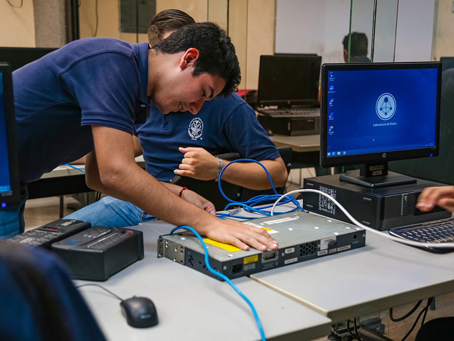

Programación Web
Nombre de la Asignatura
Propósito de Aprendizaje
El alumno implementará sistemas empleando tecnologías web para extender la disponibilidad y los alcances de los servicios de la organización.
Cuatrimestre
Séptimo Cuatrimestre
Total de horas: 75 (presenciales)
Unidades de Aprendizaje
Unidad I. Introducción a los Sistemas Web
Propósito esperado: El alumno configurará entornos de trabajo para el desarrollo web.
Temas:
- Modelo cliente-servidor, HTTP, HTTPS, URL, TCP/IP, FTP.
- Arquitecturas web: tecnologías cliente y servidor.
- Configuración de servidores de desarrollo y producción.
Unidad II. Programación del Lado del Cliente
Propósito esperado: El alumno elaborará documentos responsivos y dinámicos del lado del cliente.
Temas:
- Maquetación con HTML5 y semántica.
- CSS3 y diseño responsivo.
- JavaScript del lado del cliente.
Unidad III. Programación del Lado del Servidor
Propósito esperado: El alumno realizará programación y monitoreo en servidores web.
Temas:
- Lenguajes servidor (PHP, Python, .NET, JEE).
- APIs y arquitectura de tres niveles.
- Monitoreo y estadísticas del sistema.
Unidad IV. Autenticación de Usuarios
Propósito esperado: El alumno implementará mecanismos de autenticación para el acceso seguro.
Temas:
- Autenticación e interfaces seguras.
- Manejo de excepciones en programación web.
Referencias Bibliográficas
- Prettyman, S. (2016). Learn PHP 7, Object-Oriented Modular Programming …
- Sanders, W. (2013). Learning PHP Design Patterns
- Melé, A. (2015). Django by Example
- Bonilla, P. C. (2014). Diseño Web Adaptativo
Material Multimedia
